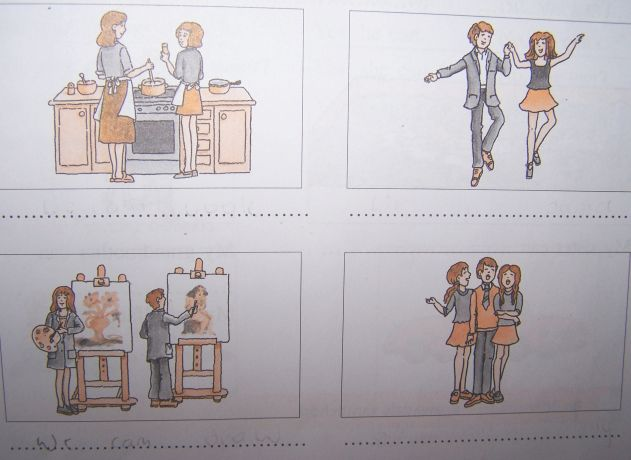

Nauczanie zdalne
Klasa 5A
wychowawca Agnieszka Bielecka
Piątek 05.06.2020r
HISTORIA
TEMAT: Polska Kazimierza Wielkiego
Obejrzyj film: https://www.youtube.com/watch?v=kctgLm9Jk8g
Polityka wewnętrzna
- polityka gospodarcza i skarbowa
Wprowadzono jednakowe obciążenia pieniężne i wojskowe dla całej ludności. król przeprowadził reformę monetarną, bijąc srebrny grosz, wzorowany na monecie czeskiej, Kazimierz Wielki nadawał liczne przywileje miastom.
- reforma administracyjna
Rozbudowano centralne urzędy nadworne i koronne, na przykład podskarbiego, marszałka, podkanclerzego. W celu zintegrowania wszystkich ziem utworzono także radę królewską.
- kodyfikacja prawa i sądownictwo
Bardzo ważną sprawą dla zjednoczonego państwa polskiego była unifikacja prawa we wszystkich dzielnicach. Przeobrażeniom uległo również sądownictwo. W 1356 r. powołany został do życia Sąd Najwyższy Prawa Niemieckiego na Zamku Krakowskim.
- Akademia Krakowska
W 1364 r. Kazimierz Wielki ufundował uniwersytet w Krakowie. Składał się on z 11 katedr: 8 prawniczych, 2 medyczne i 1 sztuk wyzwolonych. Głównym zadaniem uczelni było dostarczenie wykwalifikowanych urzędników. Po śmierci Kazimierza uniwersytet krakowski podupadł. Jej rozkwit nastąpił dopiero za czasów Władysława Jagiełły.
- pojęcie Korony Królestwa Polskiego
Około połowy XIV w., w miejsce dawnej nazwy Królestwa Polskiego, rozpowszechnił się termin Korony Królestwa Polskiego. Pojęcie to obejmowało nie tylko ziemie wchodzące wówczas w skład Królestwa, ale również te, które kiedyś do niego należały.
MATEMATYKA
Temat: Mnożenie ułamków dziesiętnych przez 10,100,1000
Zapraszam Cię do obejrzenia filmu:
https://www.youtube.com/watch?v=7_gFDt9VOeg
W e-podręczniku zapoznaj się i przepisz zadanie o jabłkach strona 152 oraz notatkę strona 153
„Mnożąc ułamek dziesiętny przez 10….” oraz przykład.
https://flipbook.apps.gwo.pl/display/2152
POLSKI
Zapisz w zeszycie:
Temat: Bracia.
Przeczytaj tekst opowiadania:
Dwaj bracia wspólnie uprawiali niewielkie pole i dzielili się zbiorami. Pewnego wieczora, gdy każdy z nich zwiózł już do stodoły swoją część plonów, jeden z braci przebudził się i tak powiedział do siebie:
– Mój brat jest żonaty i ma dwoje dzieci. A to sprawia, że ma troski i wydatki, które mnie zostały oszczędzone. On z pewnością bardziej potrzebuje tego ziarna niż ja. Zaniosę mu więc po kryjomu kilka worków. Wiem przecież dobrze, że gdybym mu to zaproponował – odmówiłby.
Wstał z łóżka, zaniósł kilka worków z ziarnem do stodoły swego brata i wrócił, by znów się położyć. Tymczasem drugi z braci obudził się chwilę później i tak rzekł do siebie:
– Nie jest sprawiedliwe, żebym miał połowę zbiorów z naszego pola. Mój brat nie zna radości życia rodzinnego. Potrzebuje spotkań z innymi ludźmi i rozrywek, a to przecież kosztuje. Pójdę więc zanieść mu część mojego ziarna.
I wstał, żeby przenieść kilka worków do sąsiedniej stodoły.
Następnego ranka każdy z braci był nadzwyczaj zdumiony, że w jego sąsieku jest tyle samo worków zboża, co poprzedniego dnia.
Każdego roku, gdy przychodził czas zbiorów, robili tak samo. I nigdy nie zdołali zrozumieć, jaki to czar sprawia, że liczba ich worków jest niezmiennie ta sama.
Na kolejnej lekcji ciąg dalszy ))
USPRAWNIANIE POLSKI
/Alan G., Nikola T., Wiktoria R., Krystian W./
- Napisz jak się dziś czujesz? Dlaczego tak możesz się czuć?
- Zapisz w zeszycie polecenie :
Spośród podanych wyrazów podkreśl czasowniki kolorem czerwonym ,a przymiotniki zielonym : rysuje , sprawdza , czerwone , chłopiec , maluje , długopis , czarny , mądry , klasa , przysmak , zmartwienie , kolorowa , nożyczki , loteria , zabawa , nauka , punktualny
Pozdrawiam Was ))
USPRAWNIANIE MATEMATYKA
(Wiktoria R, Patrycja S, Alan G)
Ćwiczymy działania na ułamkach dziesiętnych
zad.1.
Zobacz film: https://www.youtube.com/watch?v=w5Hv5vIOJQ4
Przepisz działania pisemne z filmu.
Pamiętaj, że przecinek stoi pod przecinkiem.
zad.2.
Oblicz resztę z 25 zł po zakupie skakanki za 11,80 zł, piłki za 9,70 zł i lizaka 2,15 zł. Zapisz obliczenia i odpowiedź.
kl.5a usprawnianie z matematyki- 05.06. lekcja 4
(Krystian M, Michał G, Mateusz G)
Ćwicz online staraj się pobić swój rekord. Ułóż puzzle chwytając i wstawiając kolorowe strzałki w odpowiednie miejsce : https://szaloneliczby.pl/dodawanie-i-odejmowanie-ulamkow-dziesietnych-puzzle/
Zapisz przykłady , które rozwiązujesz sposobem pisemnym. Pamiętaj, że przecinek stoi pod przecinkiem.
USPRAWNIANIE MUZYKA
e-mail: muzykamg@wp.pl
(Patrycja S.,Paulina G., Jakub M.)
Tańce narodowe-Polonez (c.d)
Od początku XIX wieku uznawany jest powszechnie za najstarszy taniec narodowy, którego forma kultywowana wśród warstw wyższych stanowiła uszlachetnioną wersję tańców obecnych od wieków w polskim społeczeństwie.
Najbardziej znane w świecie polonezy komponował Fryderyk Chopin, który uczynił z nich arcydzieła muzyki poważnej, czego przykładem jest Polonez As-dur, często kojarzony z Polską. W swoim dorobku polonezy mają także Stanisław Moniuszko oraz Michał Kleofas Ogiński.
Posłuchaj: Michał Kleofas Ogiński Pożegnanie Ojczyzny
https://www.youtube.com/watch?v=_rB-VBCNUdE
Posłuchaj: Wojciech Kilar Polonez z filmu Pan Tadeusz
http://www.muzykotekaszkolna.pl/multimedia/utwory/polonez-z-filmu-pan-tadeusz-wojciech-kilar-muzykoteka/
Zad. Opisz swoje wrażenia po wysłuchaniu dwóch polonezów.
Czwartek 04.06.2020r
ANGIELSKI
Topic: What can we do? – Co my potrafimy robić?
Zadanie 1 Umieść odpowiednie zdanie pod obrazkami i przetłumacz go na język polski.
1 We can cook.
2 We can paint.
3 We can dance.
4 We can sing.
OBRAZKI W ZAŁĄCZNIKU

Zadanie 2 Odpowiedz na pytania.
1) What can your mother do? Co potrafi twoja mama robić?
My mother can ...................……………………………………………………
2) What can your father do? My father ……………………………………
3) What can your sister do? My sister ..……………………………………
4) What can your brother do? … ……………………………………………..
5) What can you do? I …………………………………………………………..
INFORMATYKA
Temat: Zaznaczanie fragmentu rysunku. Komputerowe rysowanie. Powtórka.
- Obejrzyj film
https://www.youtube.com/watch?v=Lq658eBCbHY
- Wykonaj podobne ćwiczenie w programie graficznym Paint
- Jeżeli nie posiadasz komputera opisz w zeszycie w jaki sposób można przenieść fragment rysunku.
Odpowiedź wyślij na mojego e-maila lub na mój nr telefonu.
Powodzenia!
MATEMATYKA
Temat: Ćwiczenia w dodawaniu i odejmowaniu ułamków dziesiętnych
Zapraszam Cię do rozwiązania zadań :
https://www.matzoo.pl/klasa5/odejmowanie-ulamkow-dziesietnych_32_183
jeżeli zakończysz to zrób zdjęcie i wyślij mi na maila mag.matematyka@wp.pl
Zapisz w zeszycie trzy wybrane przykłady tej strony.
POLSKI
Zapisz w zeszycie:
Temat: Nie trzeba w lesie kląć.
Przeczytaj ( nie przepisuj!) uważnie wiersz :
Małgorzata Strzałkowska ,,Moi Mili „
Życie pędzi wciąż do przodu,
coraz prędzej gna i bryka
i czasami w tym pośpiechu
coś ważnego nam umyka.
A więc wniosek dzisiaj stawiam,
aby każdy z nas spróbował
przy okazji, bez okazji,
mówić częściej takie słowa:
Do widzenia, i dzień dobry
co tam słychać?, jak się czujesz?
i poproszę, i przepraszam
oraz proszę i dziękuję,
Wtedy ludziom na tym świecie
sympatyczniej ciut by było.
No, a przecież o to chodzi,
by się wszystkim milej żyło!
Zapisz do zeszytu odpowiedzi :
- Ile zwrotek ma wiersz?
- Kto jest jego autorem?
- Czy wiersz zawiera rymy? Jeśli tak , wypisz je.
Czekam na Wasze prace ))
MUZYKA
e-mail:muzykamg@wp.pl
Temat:Grające kamienie.
1.Piosenka ,,Sny kamieni"muz.J.Smoczyński, sł.E. Szeptyńska
Posłuchaj piosenkę następnie spróbuj zanucić melodię (kliknij w link)
https://www.youtube.com/watch?v=w_kypwMh2Nk
Zad. Spytaj starszych, czy znają jakieś zabawy i gry z kamyczkami.
Wszystkie one rozwijają umiejętność szybkiej reakcji i sprawność manualną.
2.Manuel de Falla-Kompozytor hiszpański, który ukazał światu bogactwo różnorodnych tradycji swego kraju (Przeczytaj informacje o tym słynnym kompozytorze)
http://muzykotekaszkolna.pl/artykuly/manuel-de-falla-biogram/
Posłuchaj:Manuel de Falla Taniec ognia
https://www.youtube.com/watch?v=-lrsfwECzvw
TECHNIKA/ grupa p. Jacka Krzemianowskiego
Lekcja
Temat: Zabawka zręcznościowa z recyklingu.
Potrzebne będą:
butelka po kefirze lub pudełko po mleku, pojemniczki po kinder niespodziance lub kulki ze starego dezodorantu w kulce (fawkulce:), sznurek, nożyczki, gwoździk, czarny i czerwony marker, czerwona taśma (opcjonalnie)
Zapoznaj się ze stroną:
https://dzieciakiwdomu.pl/2016/03/zlap-kurczaka-zabawka-zrecznosciowa-dla-dzieci-diy.html
Spróbuj wykonać zabawkę tak jak to zostało przedstawione na stronie internetowej.
Nie spiesz się. Poproś o pomoc osobę dorosłą przy przecinaniu butelki.
Pamiętaj o zachowaniu bezpieczeństwa podczas posługiwania się nożyczkami.
Jeśli możecie zróbcie zdjęcia Waszych prac. Chętnie je zobaczę.
Życzę miłej zabawy
Pozdrawiam
TECHNIKA / grupa p. Ewy Krzemianowskiej
Temat: Pojemnik na przybory szkolne
Dzisiaj rozpoczniemy nową pracę techniczną. Wykonamy pojemnik na przybory szkolne z plastikowych pojemników.
Poniżej umieściłam 2 filmy. Możesz zobaczyć ciekawe pomysły jak z butelek można zrobić nowy inny praktyczny pojemnik
https://www.youtube.com/watch?v=z1VYNeWX1aw
https://www.youtube.com/watch?v=jQiYe4L17VA
i link ze zdjęciami
https://www.google.com/search?q=pojemnik+na+kredki+z+plastikowej+butelki&client=firefox-b-d&source=lnms&tbm=isch&sa=X&ved=2ahUKEwiNlYnKvuHpAhURmYsKHX6OB7MQ_AUoAXoECAwQAw&biw=1696&bih=798
Po obejrzeniu filmu i zdjęć zastanów się jaki pojemnik chciałbyś zrobić dla siebie.
Zadanie:
- Narysuj w zeszycie kolorowy projekt pojemnika na przybory szkolne.
- Napisz jakie przybory i narzędzia będziesz potrzebował do jego wykonania
- Przygotuj dostępne w domu materiały i narzędzia do wykonania pojemnika
- Zrób pojemnik według własnego pomysłu
Pamiętaj o zasadach bhp. Bądź ostrożny podczas posługiwania się ostrymi narzędziami.
Zrób zdjęcie zadania i prześlij na mój adres e - mail
Środa 03.06.2020r
ANGIELSKI
Topic: Can you do it? - Czy ty potrafisz to robić?
Zadanie 1 Przepisz do zeszytu formy pytające z czasownikiem ‘can’.
Can – pytania
Can I...? - Czy ja potrafię ...?
Can you...? - Czy ty potrafisz..?
Can he ....? - Czy on potrafi ...?
Can she ... ? - Czy ona potrafi …?
Przykład:
Can you swim? Czy ty potrafisz pływać? - Yes, I can. Tak, potrafię.
- No, I can’t. Nie, ja nie potrafię.
Zadanie 2 Odpowiedz na pytania. Tak, czy nie? Czasowniki znajdziesz na liście z poprzednich lekcji.
Przykład:
Can you write? Yes, I can. Czy ty potrafisz pisać? Tak, ja potrafię.
1 Can you play the piano? ..................................
2 Can you swim? ...........................................
3 Can you read? …………………………..
4 Can you ski? ………………………………..
5 Can you ride a bike? ………………………
6 Can you dance? ……………………………
7 Can you draw? …………………………….
Zadanie 4 Teraz kliknij na link ponizej i posłuchaj nagrania.
https://www.youtube.com/watch?v=_Ir0Mc6Qilo
Słowniczek: clap [klep] klaskać
Stamp – tupać
Buffalo [bafelo] - bawół
Climb [klajm] wspinać się
Czy potrafisz odpowiedzieć na pytanie?
Can a buffalo run? Czy bawół potrafi biegać?
.................................................
HISTORIA
TEMAT: Polska Kazimierza Wielkiego
Obejrzyj film: https://www.youtube.com/watch?v=kctgLm9Jk8g
Polityka wewnętrzna
- polityka gospodarcza i skarbowa
Wprowadzono jednakowe obciążenia pieniężne i wojskowe dla całej ludności. król przeprowadził reformę monetarną, bijąc srebrny grosz, wzorowany na monecie czeskiej, Kazimierz Wielki nadawał liczne przywileje miastom.
- reforma administracyjna
Rozbudowano centralne urzędy nadworne i koronne, na przykład podskarbiego, marszałka, podkanclerzego. W celu zintegrowania wszystkich ziem utworzono także radę królewską.
- kodyfikacja prawa i sądownictwo
Bardzo ważną sprawą dla zjednoczonego państwa polskiego była unifikacja prawa we wszystkich dzielnicach. Przeobrażeniom uległo również sądownictwo. W 1356 r. powołany został do życia Sąd Najwyższy Prawa Niemieckiego na Zamku Krakowskim.
- Akademia Krakowska
W 1364 r. Kazimierz Wielki ufundował uniwersytet w Krakowie. Składał się on z 11 katedr: 8 prawniczych, 2 medyczne i 1 sztuk wyzwolonych. Głównym zadaniem uczelni było dostarczenie wykwalifikowanych urzędników. Po śmierci Kazimierza uniwersytet krakowski podupadł. Jej rozkwit nastąpił dopiero za czasów Władysława Jagiełły.
- pojęcie Korony Królestwa Polskiego
Około połowy XIV w., w miejsce dawnej nazwy Królestwa Polskiego, rozpowszechnił się termin Korony Królestwa Polskiego. Pojęcie to obejmowało nie tylko ziemie wchodzące wówczas w skład Królestwa, ale również te, które kiedyś do niego należały.
POLSKI
Zapisz w zeszycie:
Temat: W okolicy bezokolicznika.
Przeczytaj ( nie przepisuj !) na głos czasownik „s ł u ch a ć”. Odpowiedz ustnie na pytania:
- Czy wiesz, kto ma słuchać? Czy możesz odpowiedzieć na to pytanie? Dlaczego?
- Czy wiesz, kiedy trzeba słuchać? Dlaczego?
- Czy wiesz, ile osób ma słuchać? Dlaczego?
Teraz zapisz w zeszycie podane niżej wyrazy : {zielonym kolorem zaznacz ich końcówki}
(Czy dostrzegasz jakąś regułę? Czy wiesz już jak nazywają się takie formy czasowników? )
rysowa ć, malowa ć, skaka ć, upie c, ucie c, sta ć, gry źć, wzią ć,
Zapisz w zeszycie i uzupełnij brakującymi wyrazami:
Taka forma czasownika, która określa czynność lub …….. , ale nie informuje o czasie, rodzaju, osobie ani liczbie nazywa się ……… Jest to …………….. forma czasownika. W języku …………. bezokoliczniki ……się na -c, -ć, -ść lub -źć.
Potrzebne wyrazy: bezokolicznikiem, nieosobowa, polskim, stan, kończą się
BIOLOGIA
Temat: Rozprzestrzenianie się roślin okrytonasiennych .
Prezentacja -
https://www.youtube.com/watch?v=MT9yEuD3g-I
Notatka :
1. Owoc to charakterystyczny organ roślin okrytonasiennych. Jest zbudowany z jednego lub kilku nasion oraz ściany owocu, którą nazywamy owocnią .
Narysuj owoc truskawki , zaznacz owocnie i nasiona .
2. Sposoby przenoszenia owoców w zależy od jej budowy. Uzupełnij zdania wyrazami z nawiasów ( wodę , zwierzęta, wiatr)
- Owoce które są lekkie i maja aparaty lotne przenoszone są przez ....................
- Owoce które mają atrakcyjny smak, zapach , barwę , a niektóre także drobne haczyki przenoszone są przez ....................
- Owoce otoczone tkanką , która chroni je przed nasiąkaniem wodą lub mają komory wypełnione powietrze, przenoszone są przez ..........................
- Nasienieto organ, który umożliwia roślinom przetrwanie i rozprzestrzenianie się. Do kiełkowania nasion niezbędne są : woda, tlen, odpowiednia temperatura , a w niektórych roślin - również światło.
- Dorozmnażania wegetatywnego (bezpłciowego ) służą roślinom : rozłogi (np. truskawki),kłącza (np. imbir), bulwy (np. ziemniak), cebule (np. tulipan) .
MATEMATYKA
Temat: Ćwiczenia w dodawaniu i odejmowaniu ułamków dziesiętnych
Zapraszam Cię do rozwiązania zadań :
https://www.matzoo.pl/klasa5/dodawanie-ulamkow-dziesietnych_32_182
jeżeli zakończysz to zrób zdjęcie i wyślij mi na maila mag.matematyka@wp.pl
Zapisz w zeszycie trzy wybrane przykłady tej strony.
USPRAWNIANIE POLSKI
/Kuba M., Mateusz P./
- Napisz jak się dziś czujesz ?
- Z podanych wyrazów ułóż poprawne zdania i zapisz je do zeszytu:
(pamiętaj o wielkiej literze i znakach interpunkcji)
Od, razu .Po, prasowaniu, wyłącz, żelazko
........................................
........................................
bawić, się, Nie, dzieciom, zapałkami, pozwól
........................................
........................................
zostawaj, Nie, na, ogniu, potraw, gotujących, się
........................................
........................................
dorosłych, osób, tylko, rozpalaj ,ognisko W, w, obecności
........................................
........................................
USPRAWNIANIE MATEMATYKA
(Paulina, Michał G, Krystian M)
Ćwiczymy działania na ułamkach dziesiętnych
zad.1.
Zobacz film: https://www.youtube.com/watch?v=w5Hv5vIOJQ4
Przepisz działania pisemne z filmu.
Pamiętaj, że przecinek stoi pod przecinkiem.
zad.2.
Oblicz resztę z 25 zł po zakupie skakanki za 11,80 zł, piłki za 9,70 zł i lizaka 2,15 zł. Zapisz obliczenia i odpowiedź.
USPRAWNIANIE RUCHOWE
Krystian W., Alan G
Proszę o pomoc w ćwiczeniach rodziców lub rodzeństwo.
Bardzo proszę wykonanie podanych ćwiczeń. Jeżeli któreś z zaproponowanych ćw. sprawi trudność w wykonaniu można je ułatwić zgodnie z możliwościami dziecka.
www.youtube.com/watch?v=nUAtfdgAU9g
USPRAWNIANIE MUZYKA
e-mail: muzykamg@wp.pl
(Patrycja S.,Nikola T.,Wiktoria R,)
Tańce narodowe-Polonez
Polonez – polski taniec narodowy, dawniej nazywany tańcem dworskim. Jest to taniec kołowy, korowodowy. Nazwa polonez zapożyczona została z języka francuskiego – polonaise.
W zależności od regionu kraju, w którym był tańczony, występował pod różnymi nazwami, takimi jak: „taniec polski”, „chodzony”, „powolny” „starodawny” i in.
(więcej o polonezie:kliknij w link)
http://www.muzykotekaszkolna.pl/wiedza/gatunki/polonez
zobacz jak dawniej tańczono poloneza
http://www.tance.edu.pl/pl/dances/show/category/0/dance/717
Wtorek 02.06.2020r
GODZ. WYCHOWAWCZA
Temat: Moje mocne strony.
Skopiuj link: https://www.youtube.com/watch?v=GutSBEon4gE
I zastanów się nad słowami lektora. Co o tym myślisz? Pozdrawiam ))
POLSKI
Zapisz w zeszycie:
Temat: Co to znaczy kochać?
Przeczytaj uważnie fragment utworu ks. Jana Twardowskiego pt. ,, Co to znaczy kochać?”
Koniec i bomba,
nie kochał – więc trąba.
Tak przeczytała pewna dziewczynka w pamiątkowym albumie.
Co to znaczy kochać?
Pomyślała sobie, że kochać – to tylko dawać.
To znaczy troszczyć się o kogoś, martwić się, czy ukochanego brzuch czasem nie boli, smarować komuś bułki grubo masłem, zasłonić szalikiem klosz od lampy, żeby go światło nie raziło i żeby nie mrugał w chorobie, załatwiać mu tysiące spraw tak szybko, że na jednej nodze, szyć mu rękawiczkę po nocach, żeby mu nie zmarzł mały palec u lewej ręki, bo podobno z niego największy zmarzlak.
Tymczasem kochać – to nie tylko dawać, ale i przyjmować.
Przyjmować skrzywioną minę, kiedy ktoś wstanie lewą nogą z łóżka, deszcz, nawet wtedy, kiedy nie ma parasolki, kiedy stłucze się ulubiony talerz (...)
Odpowiedz pisemnie na pytania do tekstu:
- Czy zgadzasz się ze słowami księdza Jana? (Uzasadnij wypowiedź, tzn. napisz dlaczego tak, lub dlaczego nie)
- Według osoby mówiącej w utworze Jana Twardowskiego „kochać” to znaczy… (dokończ zdanie swoimi słowami).
Powodzenia ))
ANGIELSKI
Przepisz temat do zeszytu.
Topic: I can sing very well – Ja potrafię śpiewać bardzo dobrze
Na dzisiejszej lekcji nauczymy się powiedzieć po angielsku, w jakim stopniu potrafimy coś robić.
Zadanie 1 Przepisz tabelę do zeszytu.
Stopień umiejętności:
|
I can sing very well. - Ja potrafię śpiewać bardzo dobrze.
I can sing well. - Ja potrafię śpiewać dobrze.
I can’t sing well. - Ja nie potrafię śpiewać dobrze.
I can’t sing at all. - Ja nie potrafię śpiewać wcale.
|
very [weri] – bardzo
well [łel] – dobrze
at all [et ol] – wcale
Zadanie 2 Przetłumacz zdanie na język polski według przykładu.
Przykład:
We can paint very well. My potrafimy malować bardzo dobrze.
He can play the guitar well. …………………………………….
We can dance very well. …………………………………….
They can swim very well. …………………………………….
She can’t cook well. ………………………………………
He can’t read at all. ……………………………………..
RELIGIA
Temat: Dlaczego idziemy do kościoła?
- Pomódl się słowami pieśni
https://www.youtube.com/watch?v=bgQmgiQGDsU
- Zobacz prezentację „Do kościoła nie przychodzimy się modlić”
https://www.youtube.com/watch?v=7LJn4-CYAf8
- Zapamiętaj wszystkie ważne postawy aktywnego uczestnictwa we Mszy świętej.
- Pomódl się słowami pieśni „Małe TGD- Bohater”. Podziękuj Jezusowi, On w każdą niedzielę zaprasza i czeka na Ciebie w kościele.
https://www.youtube.com/watch?v=rtqxy00ZFM8
W-F DZIEWCZYNY
Temat:Ćwiczenia równoważne
zostańwdomu#trenuj w domu !!!
Potrzebne przybory :piłeczka lub zwinięte skarpetki
Przypominam o zasadach bhp podczas ćwiczeń w domu,tak jak na lekcjach wf w szkole. Proszę również pamiętać, że ćwiczymy tylko i wyłącznie jak jesteśmy zdrowi.
Pamiętajmy przed rozpoczęciem ćwiczeń ,aby zrobić 10 minutową rozgrzewkę (ćwiczenia pamiętamy z lekcji). Ćwiczymy w domu lub na podwórku,boisku. Proszę spróbować powtórzyć wszystkie ćwiczenia na miarę swoich możliwości.
https://youtu.be/-QFlQmGAqv0
W-F CHŁOPCY
Temat : Doskonalenie ćwiczeń sprawnościowych
Uwagi wstępne :
- ćwicz tylko jak jesteś zdrowy
- staraj się ćwiczyć w stroju sportowym
- ćwicz przy otwartym/uchylonym oknie
- ćwiczenia główne poprzedź rozgrzewką ok.10 min.
- zanim zaczniesz ćwiczyć, uważnie zapoznaj się z ich opisem
- pamiętaj o rozluźnianiu mięśni pomiędzy poszczególnymi ćwiczeniami
Propozycja ćwiczeń :
- Bieg w miejscu ok. 3-4 min.(trzymaj równe tempo)
- w biegu klaśnij pod kolanem (raz pod prawym,raz pod lewym),
pamiętaj o plecach prostych
- Stojąc w rozkroku,wykonaj skrętoskłony ( nogi proste,dotykamy raz prawej,
raz lewej stopy.
- Stojąc w lekkim rozkroku wykonaj 10 półprzysiadów
- Wykonaj rozkrok - zeskok z jednoczesnym wyrzutem ramion w bok - 12 x
- W leżeniu tyłem wykonaj nożyce:
- poziome 2 x 30 sek.
- pionowe 2 x 30 sek.
- W leżeniu tyłem( kolana podkurczone,ramiona wzdłuż tułowia),unosimy
biodra w górę,napinamy pośladki i wytrzymujemy 5 sek x 10 powtórzeń
- Stojąc w pozycji wykroczno-zakrocznej czyli jedna noga z przodu,druga
z tył.Podskokiem zmieniamy ustawienie nóg - 20 x
- Rytmicznie przemieszczaj się po kwadracie.Krok w prawo,krok w przód,
krok w lewo,krok w tył - 2 x po 1 min.
- W pozycji stojąc( w lekkim rozkroku),wykonaj przysiad,podskokiem wyprost
nóg do podporu przodem i powrót do pozycji wyjściowej - 10 x
- Na koniec 1 serii wykonaj ćwiczenie oddechowe,w pozycji swobodnej,
unosimy ramiona (wdech),skłon z pogłębianiem w przód (wydech) - 7 x
Każdą serię powtórz 2 razy,przerwa pomiędzy seriami ok. 10 min.
Wykonując ćwiczenia w domu wspomagaj się nagraniami video dostępnymi
w serwisie internetowym You Tube,wybierając ćwiczenia dostosowane do
Twoich możliwości.
Dziękuję.
WDŻ
Temat: Dbam o higienę.
Proszę obejrzyj filmik: https://www.youtube.com/watch?v=C2yIDYIKkSU
USPRAWNIANIE POLSKI
(Patrycja S., Wiktoria R., Michał G., Paulina G., Krystian M.)
- Napisz jak się dziś czujesz ?
- Z podanych wyrazów ułóż poprawne zdania i zapisz je do zeszytu:
(pamiętaj o wielkiej literze i znakach interpunkcji)
Od, razu .Po, prasowaniu, wyłącz, żelazko
........................................
........................................
bawić, się, Nie, dzieciom, zapałkami, pozwól
........................................
........................................
zostawaj, Nie, na, ogniu, potraw, gotujących, się
........................................
........................................
dorosłych, osób, tylko, rozpalaj ,ognisko W, w, obecności
........................................
........................................
USPRAWNIANIE MATEMATYKA
(Krystian W, Nikola) ( Mateusz P, Jakub)
Ćwiczymy działania na ułamkach dziesiętnych
zad.1.
Zobacz film:https://www.youtube.com/watch?v=w5Hv5vIOJQ4
Przepisz działania pisemne z filmu.
zad.2.
Oblicz resztę z 25 zł po zakupie skakanki za 11,80 zł, piłki za 9,70 zł i lizaka 2,15 zł. Zapisz obliczenia i odpowiedź.
Poniedziałek 01.06.2020r
GEOGRAFIA
Temat: Krajobraz śródziemnomorski
Zapisz notatkę:
.Klimat
W klimacie śródziemnomorskim wyróżniamy dwie pory roku. Lato jest słoneczne, suche i ciepłe. Zima jest łagodna, temperatura powietrza nie spada poniżej 0°C, ale często pada deszcz.
- Roślinność.
Roślinność w basenie Morza Śródziemnego ma zwykle grube, skórzaste liście pokryte ochronną warstwą w celu zapobiegania nadmiernemu parowaniu.
W klimacie śródziemnomorskim uprawia się wiele roślin powszechnie używanych w kuchni – przypraw oraz owoców. Wiele roślin uprawnych zostało sprowadzonych do Polski z krajów śródziemnomorskich.
- Zwierzęta.
Przeczytaj tekst i wpisz zwierzęta występujące w strefie śródziemnomorskiej:
Wśród gadów liczne są żółwie i węże, a także kameleony, gekony i inne jaszczurki. Wiele ptaków naszego regionu (zwłaszcza pływających i owadożernych) spędza zimę nad Morzem Śródziemnym, gdyż w naszych warunkach nie znajdują wówczas odpowiedniego pokarmu. Z Polski nad Morze Śródziemne odlatują na przykład szpaki, skowronki, czajki, perkozy i czaple. Spośród ssaków lądowych charakterystyczne dla regionu są przede wszystkim dziki, jeże, króliki i lisy, a na większych wysokościach – susły, kozice, muflony i koziorożce.
4. Turystyka
Teraz już trochę wakacyjnie. Przeniesiemy się w rejon Morza Śródziemnego.
https://www.youtube.com/watch?v=8TdnK6RvnNY
https://www.youtube.com/watch?v=btq_qoa5cfg
RELIGIA
Temat; Praca i lenistwo czyli „Przypowieść o talentach”
- Pomódl się słowami pieśni
https://www.youtube.com/watch?v=bgQmgiQGDsU
- Posłuchaj „Przypowieść o talentach”
https://www.youtube.com/watch?v=ijWRsKINoDk
- Zastanów się jakie talenty, dary dał Tobie Bóg? Możesz je sobie napisać na kartce. Pomyśl, jak możesz je rozwijać?
- Ułóż samodzielną modlitwę, w której podziękujesz Bogu za wszystkie talenty.
POLSKI
Zapisz w zeszycie:
Temat: Czy dobrze jest sobie pomagać ?
(PRZECZYTAJ !)
Z okazji Dnia Dziecka wszystkim moim uczniom przesyłam serdeczne pozdrowienia oraz życzenia WYTRWAŁOŚCI, PRACOWITOŚCI I MĄDREJ DETERMINACJI ( patrz tu, co to determinacja: https://wsjp.pl/index.php?id_hasla=31476
…DO PRACY, gdyż do końca roku już niewiele zostało. Zatem nie ociągamy się, nie odkładamy pracy ,,na potem” tylko cierpliwie i wytrwale pracujemy DO KOŃCA ))))
A to ode mnie krótki film dla Was, moi mili (link): https://www.youtube.com/watch?v=Ula9f0dDjbk
Jak rozumiesz temat dzisiejszej lekcji?
W zeszycie zapisz odpowiedź na pytanie zawarte w temacie lekcji. Czekam na Wasze notatki ))
Pozdrawiam))
MATEMATYKA
Temat: Ćwiczenia w dodawaniu i odejmowaniu ułamków dziesiętnych
Zapraszam Cię do obejrzenia filmiku:
https://www.youtube.com/watch?v=2BtFTM7mCxg
Z e-podręcznika zadanie 4 i 5 strona 151
https://flipbook.apps.gwo.pl/display/2152
PLASTYKA - KLASA 5
TEMAT : Kompozycje rysunkowe i malarskie
/kompozycja, techniki mieszane/
/Do wykonania pracy będzie potrzebna : kartka papieru, pisaki i farby/
Waszym zadaniem będzie wykonanie kilku prac będących
połączeniem odcisków palców zmoczonych w kolorowej farbie i rysunku.
Ciekawe i zabawne pomysły obejrzyjcie na filmie :
https://www.youtube.com/watch?v=dheMZoVa1Ug
Wybierzcie takie które was zainteresują i wykonajcie je
A może wymyślicie sami rysunki na podobnej zasadzie.
Zróbcie zdjęcie pracy i wyślijcie na adres: beata.chmiel20@wp.pl
W-F DZIEWCZYNY
Temat:Skok w dal z miejsca.
zostańwdomu#trenuj w domu !!!
Przypominam o zasadach bhp podczas ćwiczeń w domu,tak jak na lekcjach wf w szkole. Proszę również pamiętać, że ćwiczymy tylko i wyłącznie jak jesteśmy zdrowi.
Pamiętajmy przed rozpoczęciem ćwiczeń ,aby zrobić 10 minutową rozgrzewkę (ćwiczenia pamiętamy z lekcji). Ćwiczymy na boisku lub na trawie,piasku
Dzisiaj nauczymy się techniki skoku w dal z miejsca i z rozbiegu.Proszę obejrzyjcie dokładnie filmik.Poćwiczcie sobie wieloskoki, a następnie tak jak na filmiku skok w dal.
https://youtu.be/ASzPOiYDvB4
W-F CHŁOPCY
Temat : Ćwiczenia w wykorzystaniem ciężaru ciała
Uwagi wstępne :
- ćwicz tylko jak jesteś zdrowy,jeśli cokolwiek Ci dolega,coś Cię boli,
nie ćwicz
- staraj się ćwiczyć w stroju sportowym
- ćwicz przy otwartym/uchylonym oknie
- ćwiczenia główne poprzedź rozgrzewką
- pamiętaj o rozluźnianiu mięśni pomiędzy poszczególnymi ćwiczeniami
- zanim zaczniesz ćwiczyć, uważnie zapoznaj się z ich opisem
Propozycja ćwiczeń :
- Biegnij w miejscu przez 3-4 min.(staraj się aby tempo biegu było równe)
- Stań w rozkroku,ramiona w dół
- krążenia ramion w przód ( 10 powtórzeń)
- krążenia ramion w tył ( 10 x)
- krążenia ramion naprzemianstronne w przód (10x)
- krążenia ramion naprzemianstronne w tył (10x)
- Stojąc w rozkroku,ramiona w bok
- skłon tułowia w przód z pogłębianiem ( 10x)
- skłon tułowia w bok z pogłębianiem, w prawą i lewą stronę ( po 5x)
- Wykonaj podpór na wyprostowanych ramionach leżąc przodem
- wytrzymaj podpór przez 30 sek.(powtórz 3x)
- Wykonaj podpór na ugiętych ramionach (łokciach)
- wytrzymaj podpór przez 30 sek. ( powtórz 3x)
- Wykonaj podpór leżąc tyłem (ramiona ułóż obok bioder i unieś biodra)
- wytrzymaj 30 sek.
- Leżąc tyłem,podkurcz nogi,ramiona wzdłuż tułowia i wykonaj 20 brzuszków
- Stań w lekkim rozkroku i wykonaj 2 x 10 półprzysiadów
- Ćwiczenie oddechowe,stojąc w pozycji swobodnej,ramiona w górę (wdech),
skłon w przód z pogłębianiem ( wydech) - powtórz 5 x
Każdą serię powtórz 2 razy , przerwa pomiędzy seriami ok. 10 min.
Wykonując ćwiczenia w domu wspomagaj się nagraniami video dostępnymi
w serwisie internetowym You Tube , wybierając ćwiczenia dostosowane do Twoich możliwości.
Dziękuję
USPRAWNIANIE LOGOPEDIA
Paulina G., Krystian M. Ćwiczenia oddechowe - usiądź wygodnie i zrób 5 wdechów i wydechów przez nos, pamiętaj, że usta są zamknięte Ćwiczenia słuchu - usiądź, zamknij oczy i nazwij 3 dźwięki dochodzące z otoczenia Ćwiczenia usprawniające język (przygotowanie do wywołania głoski /r/) - unieś język do górnych dziąseł, cofnij język wzdłuż podniebienia, przypomnij sobie ćwiczenie nazwane "konik" (kląskanie) - zrób je 5 razy, Powtarzaj sylaby, język ułóż przy górnych zębach: t(r)a d(r)a t(r)o d(r)o t(r)e d(r)e t(r)u d(r)u t(r)y d(r)y
USPRAWNIANIE PLASTYKA
/MATEUSZ P. MICHAŁ G. JAKUB M. ALAN G./
ZADANIE: Z plasteliny wykonajcie kształt SOWY
według instrukcji z filmu:
https://www.youtube.com/watch?v=5xejLr-lA9A
możecie wykonać kilka lub coś dodać lub zmienić
USPRAWNIANIE TAŃCE
/WIKTORIA R,PATRYCJA S,KRYSTIAN W,NIKOLA T/
Dzień dobry .
Proszę nauczcie się drugiej części układu.Zwracamy uwagę na pracę ramion i nóg. Powodzenia
ZAJĘCIA ARTYSTYCZNE ( p. Ewy Krzemianowskiej dla Paulina G.)
Temat: Poduszka na szpilki
Dzisiaj zrobimy poduszkę na szpilki. Wykonanie poduszki jest pracochłonne dlatego będziemy ją robić przez dwie lekcje. Dzisiaj zrobimy punkty od 1 do 3 naszego planu pracy.
Obejrzyj film. Zobaczysz jak w prosty sposób możesz sama uszyć serduszko. Brzegi serduszka przeszyjemy ręcznie ściegiem dzierganym.
https://www.youtube.com/watch?v=wJeb_1S9ngY
Materiały i narzędzia: Kartka z bloku technicznego, ołówek, nożyczki, kredki, tkanina, nitka, igła sznureczek, wata do wypełnienia serduszka lub inny dostępny w domu materiał.
Plan pracy:
Narysuj projekt serduszka w zeszycie
Przygotuj potrzebne materiały i narzędzia
Narysuj na kartce z bloku serce i wytnij – to będzie nasz szablon
Obrysuj serce z papieru na lewej stronie tkaniny 2 razy i wytnij.
Połącz wycięte serduszka z tkaniny i powoli zszyj ściegiem dzierganym
Włóż do serduszka zwykłą watę, lub inny wypełniacz i zaszyj serduszko do końca.
Prace wykończeniowe
Zrób pierwsze 3 punkty naszego planu. Podczas pracy pamiętaj o zachowaniu bezpieczeństwa. Bądź ostrożna podczas posługiwania się ostrymi narzędziami. Pracę wykonuj powoli i bardzo starannie
Archiwum
25-29.05
18-22.05
11-15.05
04-08.05
27-30.04
20-24.04
15-17.04
06-08.04
30.03-03.04
25-27.03